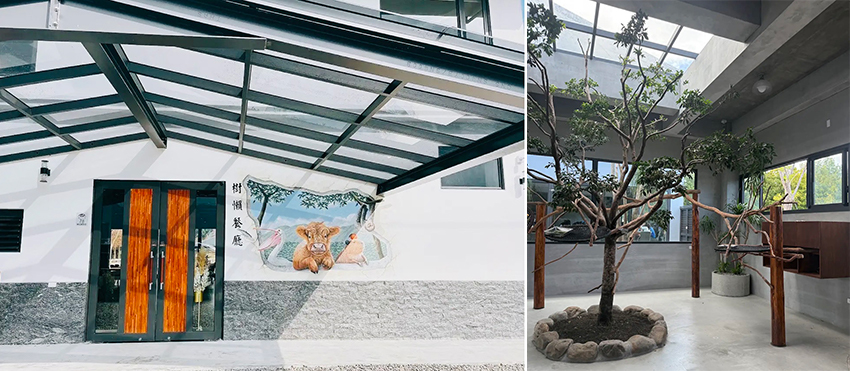
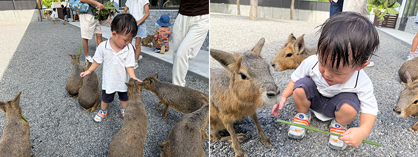
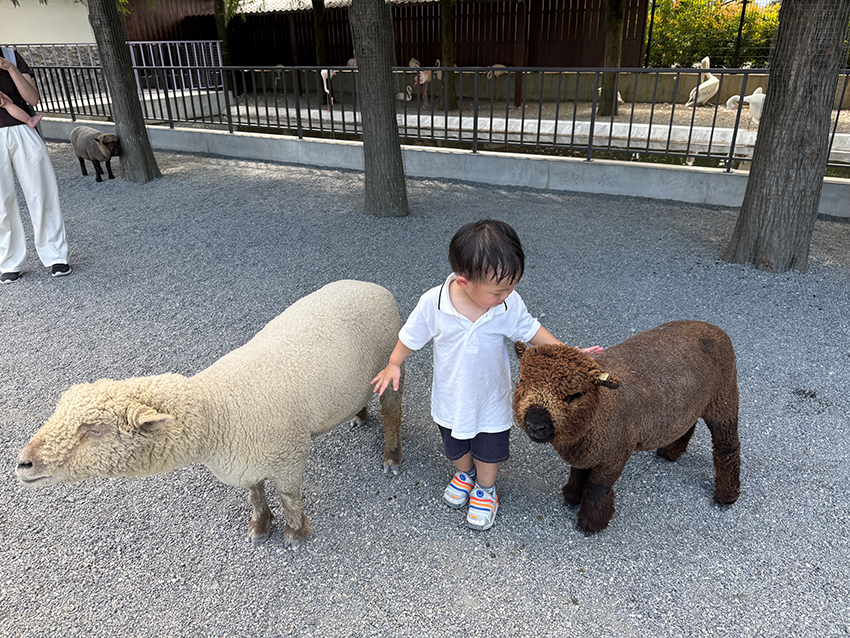
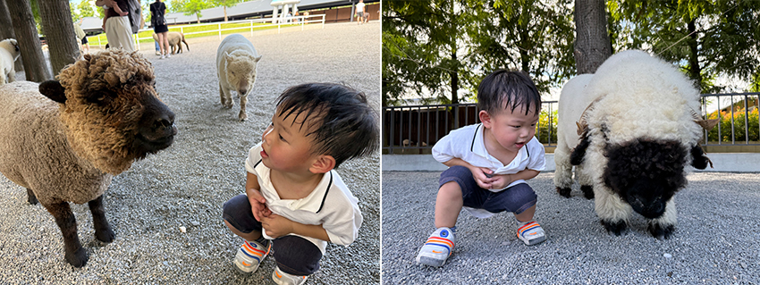
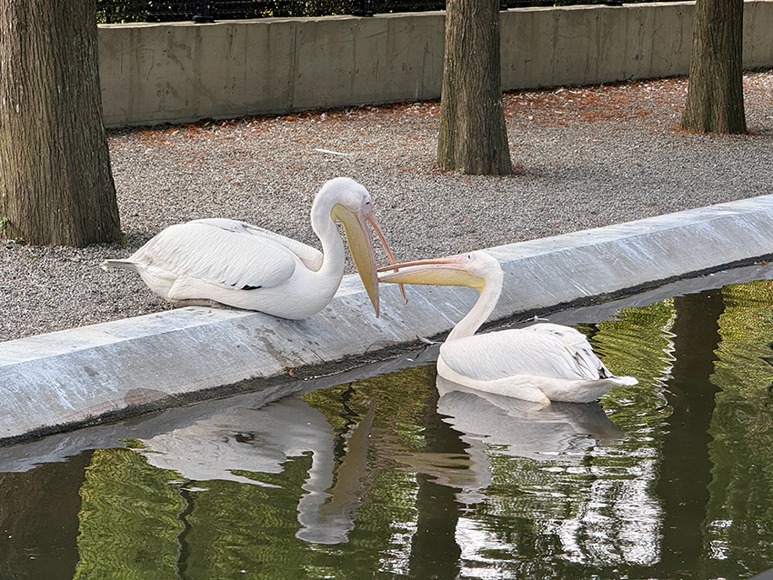

在這次雙十連假，我決定帶著家人們前宜蘭遊玩。帶著兩個不到三歲的小孩，在連假出遊，真的是一大挑戰。於是我事先做了許多功課，在眾多宜蘭農場中找到了「樹懶餐廳」。雖然名字裡有「餐廳」，但其實這裡是一座超大的親子農場與餐廳。
|  |
因為連假的關係，不管是買票還是入場都需要排隊，幸好旁邊設有遊戲區與溜滑梯，讓爸媽能在排隊時喘口氣。成人門票為200元，2歲以上需收50元清潔費，但每張票都會附贈草葉，可用來餵園內的可愛動物們，打卡還能再獲得牧草，讓你餵得更盡興。大約排了10分鐘後，我們終於順利入園了。園內分了三個區域，第一、第二區是動物區，第三區則更特別，可腳踩船玩水或挖沙。
 |
兒子一開始不敢餵食，只敢把牧草丟在水豚面前，看著牠慢慢咀嚼。來回幾次後，他才敢去觸摸牠。卡皮巴拉的毛摸起來格外特別，真的是很溫馴的動物，難怪現在幾乎每個宜蘭農場都必須要有這位明星動物坐鎮。
|  |
小孩的適應能力真的很強，馬上什麼都不怕，被小袋鼠們團團包圍住，感覺自己也是牠們的一員。這一區的動物除了有卡皮巴拉、袋鼠外，還有小山羌、土撥鼠跟狐獴。
|  |
來到了另一個區域，這區的動物體型相對較大，但這絲毫不影響孩子的興致。即使面對體型較大的羊、迷你馬，甚至是草尼馬，他都不害怕，反而覺得很有趣，一直要追著牠們跑。
|  |
小孩似乎最喜歡的就是這兩種羊；一種是全身蓬鬆的泰迪羊，另一種是像卡通明星的笑笑羊。他一直想看清楚牠們的臉，心裡大概在想：「為什麼牠們的臉都黑黑的吧」。
|  |
園區內還有人稱「送子鳥」的鵜鶘，體型真的超大！與牠同區生活的還有一大群紅鶴，每一隻都單腳站立在休息。逛完整個第一、第二園區後，本想說帶小孩去第三區繼續放電，但當天真的天氣太好，溫度高達33度，我們評估再玩下去可能會中暑，只好先返回飯店。也因為有這次的遺憾以及對此地十分滿意，我們約定下次一定要再來。看到孩子的笑容，那一刻已經讓人心滿意足。